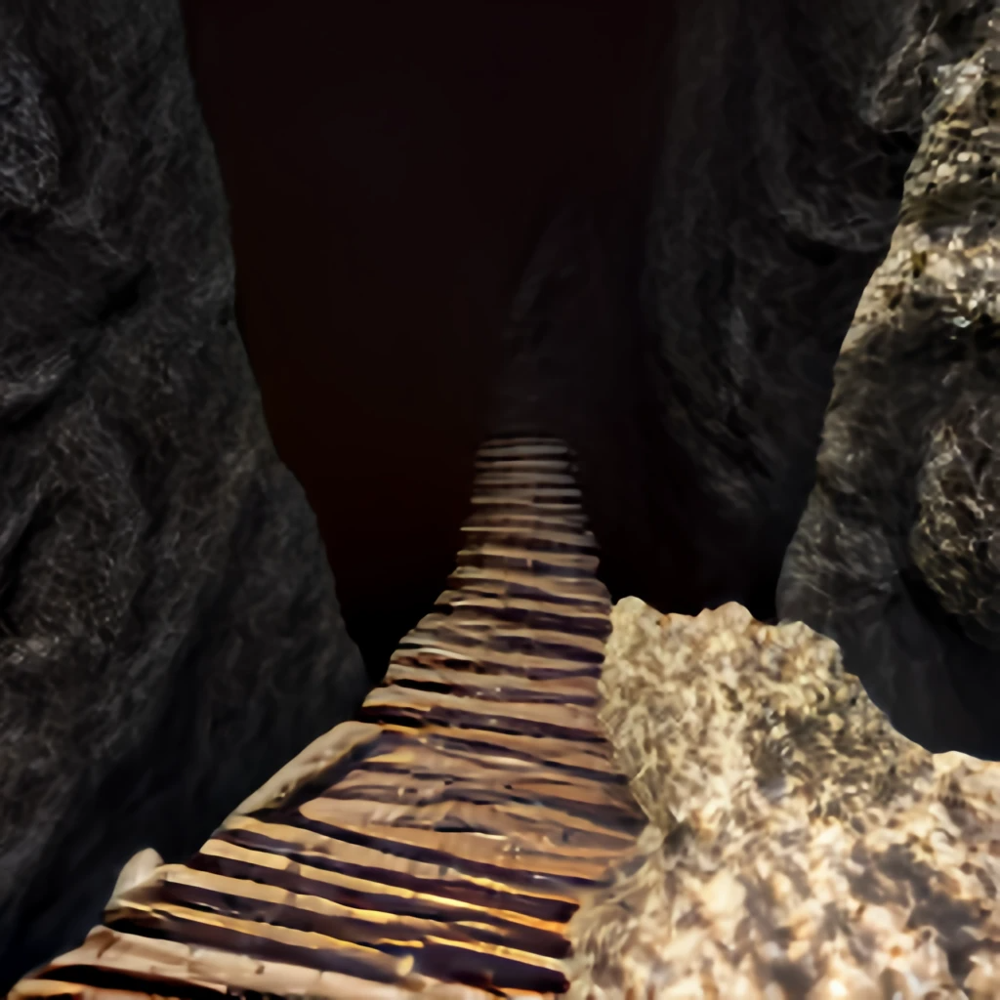

After confirming the order you go to push the carvings on the wall in the specified order. The letters seem to move like clockwork as you apply force to them. After pushing the last one, you see the stone wall open to reveal another dark path.
Walking ahead, you hear the sound of water deep below you as you come to a large cavern. There is a big gap in front of you, a sure death if you fall into the underground river below. You can see the opening on the other side where the path continues, but it is too far to jump.
It's too deep into the cave to try and bring in help, but you see various piles of rubble and building materials at the mouth of the cave where you entered.
You decide to try and build a bridge with the rubble to traverse the gap.
Ask the game masters about Bridge Building.
